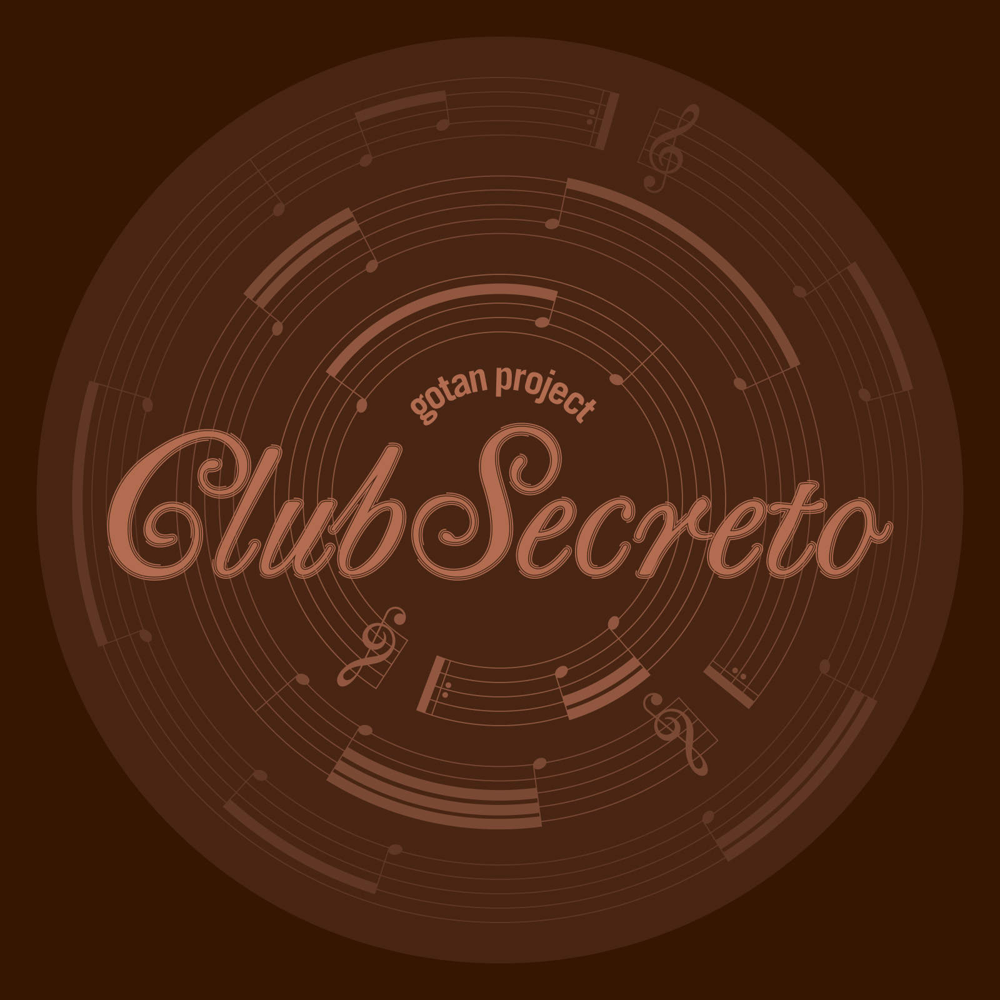

Gotan Project – Club Secreto
Geplaatst door: Halloooo_JAn op September 3, 2014
Genre: dance
Gotan Project's music grew out of dance music culture, their first album went from being an underground favourite on the international tastemaker DJ circuit to a word of mouth, million selling hit album that heralded the revival of Tango on the world stage. Now after 3 studio albums, a DJ mix album, a double album and an album revisited in Cumbia -they bring you their first remix album Club Secreto.
Now after 3 studio albums, a DJ mix album, a double album and an album revisited in Cumbia -they bring you their first remix album Club Secreto.
This album brings together remastered Gotan remixes and also some rare and previously unreleased material, the track listing having been supervised by Philippe Cohen Solal, aka Dj Solal, one of the three members of the group and founder of Ya Basta records.
Like a kind of musical speakeasy, Club Secreto offers plethora of exotic cocktails: Digital Cumbia de Buenos Aires (Lagartijeando), Baile Funk carioca (Sandrinho), Tropical Bass (Poirier), Tribal House (Michel Cleis), Deep Techno (Alex James), Soca from Berlin (Daniel Haaksman) Swing made in Paris (Nicolas Repac), Hip Hop from Tokyo (DJ Muro), etc ... And finally ends with a "version" an acoustic remix made in Tucson Arizona by Calexico. Enjoy the ride.
Tracklist:
- Arrabal - haaksman & haaksman hopper mix
- Peligro - lagartijeando remix
- Epoca - dj muro mix
- La gloria - 3fulanos/feat.magnus mefisto - mauss remix
- Reyuela - daniel haasman remix
- Santa maria - del buen ayrel/alex james remix
- La cruz del sur - interfearance vocal mix
- Panamericana - michel cleis remix
- Mi confesion - sandrinho dj's aumentaosom remix
- La gloria - poirier remix
- De hombre a hombre - nicolas repac remix
- La del ruso - calexico version